1과목: 안전관리론
1. 레빈(Lewin)의 인간 행동 특성을 다음과 같이 표현하였다. 변수 'E'가 의미하는 것은?
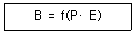
2. 다음 중 안전교육의 형태 중 OJT(On The Job of training) 교육에 대한 설명과 거리가 먼 것은?
3. 다음 중 안전교육의 기본 방향과 가장 거리가 먼 것은?
4. 다음 설명의 학습지도 형태는 어떤 토의법 유형인가?
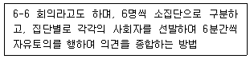
5. 안전점검의 종류 중 태풍, 폭우 등에 의한 침수, 지진 등의 천재지변이 발생한 경우나 이상사태 발생시 관리자나 감독자가 기계, 기구, 설비 등의 기능상 이상 유무에 대하여 점검하는 것은?
6. 다음 중 산업재해의 원인으로 간접적 원인에 해당되지 않는 것은?
7. 산업안전보건법령상 안전보건관리책임자 등에 대한 교육시간 기준으로 틀린 것은?
8. 매슬로우(Maslow)의 욕구단계 이론 중 제2단계 욕구에 해당하는 것은?
9. 다음 중 재해예방의 4원칙과 관련이 가장 적은 것은?
10. 파블로프(Pavlov)의 조건반사설에 의한 학습이론의 원리가 아닌 것은?
11. 인간의 동작특성 중 판단과정의 착오요인이 아닌 것은?
12. 산업안전보건법령상 안전/보건표지의 색채와 사용사례의 연결로 틀린 것은?
13. 산업안전보건법령상 안전/보건표지의 종류 중 다음 표지의 명칭은? (단, 마름모 테두리는 빨간색이며, 안의 내용은 검은색이다.)
14. 하인리히의 재해발생 이론이 다음과 같이 표현될 때, α가 의미하는 것으로 옳은 것은?
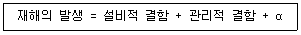
15. 허즈버그(Herzberg)의 위생-동기 이론에서 동기요인에 해당하는 것은?
16. 재해분석도구 중 재해발생의 유형을 어골상(魚骨像)으로 분류하여 분석하는 것은?
17. 다음 중 안전모의 성능시험에 있어서 AE, ABE종에만 한하여 실시하는 시험은?
18. 플리커 검사(flicker test)의 목적으로 가장 적절한 것은?
19. 강도율에 관한 설명 중 틀린 것은?
20. 다음 중 브레인 스토밍의 4원칙과 가장 거리가 먼 것은?
2과목: 인간공학 및 시스템안전공학
21. 화학설비의 안전성 평가에서 정량적 평가의 항목에 해당되지 않는 것은?
22. 인간 에러(human error)에 관한 설명으로 틀린 것은?
23. 다음은 유해위험방지계획서의 제출에 관한 설명이다. ( )안의 들어갈 내용으로 옳은 것은?
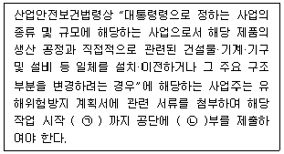
24. 그림과 같이 FTA로 분석된 시스템에서 현재 모든 기본사상에 대한 부품이 고장난 상태이다. 부품 X1부터 부품 X5 까지 순서대로 복구한다면 어느 부품을 수리 완료하는 시점에서 시스템이 정상가동 되는가?
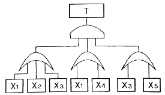
25. 눈과 물체의 거리가 23cm, 시선과 직각으로 측정한 물체의 크기가 0.03cm일 때 시각(분)은 얼마인가? (단, 시각은 600이하이며, radian단위를 분으로 환산하기 위한 상수값은 57.3과 60을 모두 적용하여 계산하도록 한다.)
26. Sanders와 McCormick의 의자 설계의 일반적인 원칙으로 옳지 않은 것은?
27. 후각적 표시장치(olfactory display)와 관련된 내용으로 옳지 않은 것은?
28. 그림과 같은 FT도에서 F1 = 0.015, F2 = 0.02, F3 = 0.⑤이면, 정상사상 T가 발생할 확률은 약 얼마인가?(오류 신고가 접수된 문제입니다. 반드시 정답과 해설을 확인하시기 바랍니다.)
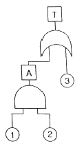
29. NOISH lifting guideline에서 권장무게한계(RWL) 산출에 사용되는 계수가 아닌 것은?
30. 인간공학을 기업에 적용할 때의 기대효과로 볼 수 없는 것은?
31. THERP(Technique for Human Error Rate Prediction)의 특징에 대한 설명으로 옳은 것을 모두 고른 것은?
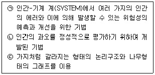
32. 차폐효과에 대한 설명으로 옳지 않은 것은?
33. 산업안전보건기준에 관한 규칙상 '강렬한 소음 작업'에 해당하는 기준은?
34. HAZOP 기법에서 사용하는 가이드 워드와 의미가 잘못 연결된 것은?
35. 그림과 같이 신뢰도가 95%인 펌프 A가 각각 신뢰도 90%인 밸브 B와 밸브 C의 병렬밸브계와 직렬계를 이룬 시스템의 실패확률은 약 얼마인가?
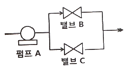
36. 인간이 기계보다 우수한 기능으로 옳지 않은 것은? (단, 인공지능은 제외한다.)
37. FTA에서 사용되는 최소 컷셋에 대한 설명으로 옳지 않은 것은?
38. 직무에 대하여 청각적 자극 제시에 대한 음성 응답을 하도록 할 때 가장 관련 있는 양립성은?
39. 컴퓨터 스크린 상에 있는 버튼을 선택하기 위해 커서를 이동시키는데 걸리는 시간을 예측하는 가장 적합한 법칙은?
40. 설비의 고장과 같이 발생확률이 낮은 사건의 특정시간 또는 구간에서의 발생횟수를 측정하는 데 가장 적합한 확률분포는?
3과목: 기계위험방지기술
41. 산업안전보건법령상 양중기를 사용하여 작업하는 운전자 또는 작업자가 보기 쉬운 곳에 해당 양중기에 대해 표시하여야할 내용으로 가장 거리가 먼 것은? (단, 승강기는 제외한다.)
42. 롤러기의 급정지장치에 관한 설명으로 가장 적절하지 않은 것은?
43. 연삭기의 안전작업수칙에 대한 설명 중 가장 거리가 먼 것은?
44. 롤러기의 가드와 위험점검간의 거리가 100mm일 경우 ILO 규정에 의한 가드 개구부의 안전간격은?
45. 지게차의 포크에 적재된 화물이 마스트 후방으로 낙하함으로서 근로자에게 미치는 위험을 방지하기 위하여 설치하는 것은?
46. 산업안전보건법령상 프레스 및 전단기에서 안전 블록을 사용해야 하는 작업으로 가장 거리가 먼 것은?
47. 다음 중 기계 설비의 안전조건에서 안전화의 종류로 가장 거리가 먼 것은?
48. 다음 중 비파괴검사법으로 틀린 것은?
49. 산업안전보건법령상 아세틸렌 용접장치를 사용하여 금속의 용접·용단 또는 가열작업을 하는 경우 게이지 압력은 얼마를 초과하는 압력의 아세틸렌을 발생시켜 사용하면 안되는가?
50. 산업안전보건볍령상 산업용 로봇으로 인하여 근로자에게 발생할 수 있는 부상 등의 위험이 있는 경우 위험을 방지하기 위하여 울타리를 설치할 때 높이는 최소 몇 m이상으로 해야하는가? (단, 산업표준화법 및 국제적으로 통용되는 안전기준은 제외한다.)
51. 크레인의 사용 중 하중이 정격을 초과하였을 때 자동적으로 상승이 정지되는 장치는?
52. 인간이 기계 등의 취급을 잘못해도 그것이 바로 사고나 재해와 연결되는 일이 없는 기능을 의미하는 것은?
53. 산압안전보건법령상 컨베이어를 사용하여 작업을 할 때 작업시작 전 점검사항으로 가장 거리가 먼 것은?
54. 다음 중 기계설비에서 반대로 회전하는 두 개의 회전체가 맞닿는 사이에 발생하는 위험점으로 가장 적절한 것은?
55. 선반 작업 시 안전수칙으로 가장 적절하지 않은 것은?
56. 산업안전보건법령상 산업용 로봇의 작업 시작 전 점검 사항으로 가장 거리가 먼 것은?
57. 산업안전보건법령상 보일러의 과열을 방지하기 위하여 최고사용압력과 상용압력 사이에서 보일러의 버너 연소를 차단하여 정상 압력으로 유도하는 방호장치로 가장 적절한 것은?
58. 프레스 작동 후 슬라이드가 하사점에 도달할 때까지의 소요시간이 0.5s일 때 양수기동식 방호장치의 안전거리는 최소 얼마인가?
59. 둥근톱기계의 방호장치 중 반발예방장치의 종류로 틀린 것은?
60. 산업안전보건법령상 형삭기(slotter, shaper)의 주요 구조부로 가장 거리가 먼 것은? (단, 수치제어식은 제외)
4과목: 전기위험방지기술
61. 피뢰기가 구비하여야할 조건으로 틀린 것은?
62. 다음 중 정전기의 발생 현상에 포함되지 않는 것은?
63. 방폭기기에 별도의 주위 온도 표시가 없을 때 방폭기기의 주위 온도 범위는? (단, 기호 “X"의 표시가 없는 기기이다.)
64. 정전기로 인한 화재 및 폭발을 방지하기 위하여 조치가 필요한 설비가 아닌 것은?
65. 300A의 전류가 흐르는 저압 가공전선로의 1선에서 허용 가능한 누설전류(mA)는?
66. 산업안전보건기준에 관한 규칙 제319조에 따라 감전될 우려가 있는 장소에서 작업을 하기 위해서는 전로를 차단하여야 한다. 전로 차단을 위한 시행 절차 중 틀린 것은?
67. 유자격자가 아닌 근로자가 방호되지 않은 충전전로 인근의 높은 곳에서 작업할 때에 근로자의 몸은 충전전로에서 몇 cm 이내로 접근할 수 없도록 하여야 하는가? (단, 대지전압이 50kV이다.)
68. 다음 중 정전기의 재해방지 대책으로 틀린 것은?
69. 가스(발화온도 120℃)가 존재하는 지역에 방폭기기를 설치하고자 한다. 설치가 가능한 기기의 온도 등급은?
70. 변압기의 중성점을 제2종 접지한 수전전압 22.9kV, 사용전압 220V인 공장에서 외함을 제3종 접지공사를 한 전동기가 운전 중에 누전되었을 경우에 작업자가 접촉될 수 있는 최소전압은 약 몇 V인가? (단, 1선 지락전류 10A, 제3종 접지저항 30Ω, 인체저항 : 10000Ω이다.)(관련 규정 개정전 문제로 여기서는 기존 정답인 3번을 누르면 정답 처리됩니다. 자세한 내용은 해설을 참고하세요.)
71. 제전기의 종류가 아닌 것은?
72. 정전기 방전현상에 해당되지 않는 것은?
73. 전로에 지락이 생겼을 때에 자동적으로 전로를 차단하는 장치를 시설해야하는 전기기계의 사용전압 기준은? (단, 금속제 외함을 가지는 저압의 기계 기구로서 사람이 쉽게 접촉할 우려가 있는 곳에 시설되어 있다.)
74. 정전용량 C=20μF, 방전 시 전압 V=2kV일 때 정전에너지(J)는 얼마인가?
75. 전로에 시설하는 기계기구의 금속제 외함에 접지공사를 하지 않아도 되는 경우로 틀린 것은?
76. Dalziel에 의하여 동물 실험을 통해 얻어진 전류값을 인체에 적용했을 때 심실세동을 일으키는 전기에너지(J)는 약 얼마인가? (단, 인체 전기저항은 500Ω으로 보며, 흐르는 전류
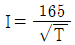
mA로 한다.)77. 전기설비의 방폭구조의 종류가 아닌 것은?
78. 작업자가 교류전압 7000V 이하의 전로에 활선 근접작업시 감전사고 방지를 위한 절연용 보호구는?
79. 방폭전기기기에 “Ex ia ⅡC T4 Ga”라고 표시되어 있다. 해당 기기에 대한 설명으로 틀린 것은?
80. 전기기계·기구의 기능 설명으로 옳은 것은?
5과목: 화학설비위험방지기술
81. 다음 중 압축기 운전시 토출압력이 갑자기 증가하는 이유로 가장 적절한 것은?
82. 진한 질산이 공기 중에서 햇빛에 의해 분해되었을 때 발생하는 갈색증기는?
83. 고온에서 완전 열분해하였을 대 산소를 발생하는 물질은?
84. 다음 중 분진 폭발에 관한 설명으로 틀린 것은?
85. 다음 중 유류화재의 화재급수에 해당하는 것은?
86. 증기 배관 내에 생성하는 응축수를 제거할 때 증기가 배출되지 않도록 하면서 응축수를 자동적으로 배출하기 위한 장치를 무엇이라 하는가?
87. 다음 중 수분(H2O)과 반응하여 유독성 가스인 포스핀이 발생되는 물질은?
88. 대기압에서 사용하나 증발에 의한 액체의 손실을 방지함과 동시에 액면 위의 공간에 폭발성 위험가스를 형성할 위험이 적은 구조의 저장탱크는?
89. 자동화재탐지설비의 감지기 종류 중 열감지기가 아닌 것은?
90. 산업안전보건법령에서 규정하고 있는 위험물질의 종류 중 부식성 염기류로 분류되기 위하여 농도가 40%이상이어야 하는 물질은?
91. 인화점이 각 온도 범위에 포함되지 않는 물질은?
92. 다음 중 아세틸렌을 용해가스로 만들 때 사용되는 용제로 가장 적합한 것은?
93. 다음 중 산업안전보건법령상 화학설비의 부속설비로만 이루어진 것은?
94. 다음 중 밀폐 공간 내 작업시의 조치사항으로 가장 거리가 먼 것은?
95. 산업안전보건법령상 폭발성 물질을 취급하는 화학설비를 설치하는 경우에 단위공정설비로부터 다른 단위공정설비 사이의 안전거리는 설비 바깥 면으로부터 몇 m 이상이어야 하는가?
96. 탄화수소 증기의 연소하한값 추정식은 연료의 양론농도(Cst)의 0.55배이다. 프로판 1몰의 연소반응식이 다음과 같을 때 연소하한값은 약 몇 vol%인가?
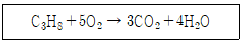
97. 에틸알콜(C2H5OH) 1몰이 완전연소할 때 생성되는 CO2의 몰수로 옳은 것은?
98. 프로판과 메탄의 폭발하한계가 각각 2.5, 5.0vol% 이라고 할 때 프로판과 메탄이 3:1의 체적비로 혼합되어 있다면 이 혼합가스의 폭발하한계는 약 몇 vol%인가? (단, 상온, 상압 상태이다.)
99. 다음 중 소화약제로 사용되는 이산화탄소에 관한 설명으로 틀린 것은?
100. 다음 중 물질의 자연발화를 촉진시키는 요인으로 가장 거리가 먼 것은?
6과목: 건설안전기술
101. 콘크리트 타설을 위한 거푸집 동바리의 구조검토 시 가장 선행되어야 할 작업은?
102. 다음 중 해체작업용 기계 기구로 가장 거리가 먼 것은?
103. 거푸집동바리 등을 조립하는 경우에 준수하여야할 안전조치기준으로 옳지 않은 것은?
104. 다음은 말비계를 조립하여 사용하는 경우에 관한 준수사항이다. ( )안에 들어갈 내용으로 옳은 것은?
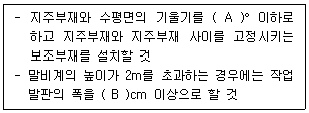
1⑤. 산업안전보건관리비계상기준에 따른 일반건설공사(갑), 대상액 「5억원 이상 ~ 50억원 미만」의 안전관리비 비율 및 기초액으로 옳은 것은?
106. 터널작업 시 자동경보장치에 대하여 당일의 작업시작 전 점검하여야 할 사항으로 옳지 않은 것은?
107. 다음은 강관틀비계를 조립하여 사용하는 경우 준수해야할 기준이다. ( )안에 알맞은 숫자를 나열한 것은?
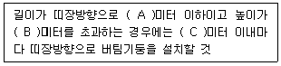
108. 지반의 종류가 다음과 같을 때 굴착면의 기울기 기준으로 옳은 것은?(2021년 11월19일 변경된 규정 적용됨)
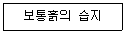
109. 동력을 사용하는 항타기 또는 항발기에 대하여 무너짐을 방지하기 위하여 준수하여야 할 기준으로 옳지 않은 것은?
110. 운반작업을 인력운반작업과 기계운반작업으로 분류할 때 기계운반작업으로 실시하기에 부적당한 대상은?
111. 터널등의 건설작업을 하는 경우에 낙반 등에 의하여 근로자가 위험해질 우려가 있는 경우에 필요한 직접적인 조치사항과 거리가 먼 것은?
112. 장비 자체보다 높은 장소의 땅을 굴착하는 데 적합한 장비는?
113. 사다리식 통로의 길이가 10m 이상일 때 얼마 이내마다 계단참을 설치하여야 하는가?
114. 추락방지망 설치 시 그물코의 크기가 10cm인 매듭 있는 방망의 신품에 대한 인장강도 기준으로 옳은 것은?
115. 타워크레인을 자립고(自立高) 이상의 높이로 설치할 때 지지벽체가 없어 와이어로프로 지지하는 경우의 준수사항으로 옳지 않은 것은?
116. 토질시험 중 연약한 점토 지반의 점착력을 판별하기 위하여 실시하는 현장시험은?
117. 비계의 부재 중 기둥과 기둥을 연결시키는 부재가 아닌 것은?
118. 항만하역작업에서의 선박승강설비 설치기준으로 옳지 않은 것은?
119. 다음 중 유해위험방지계획서 제출 대상 공사가 아닌 것은?
120. 본 터널(main tunnel)을 시공하기 전에 터널에서 약간 떨어진 곳에 지질조사, 환기, 배수, 운반 등의 상태를 알아보기 위하여 설치하는 터널은?